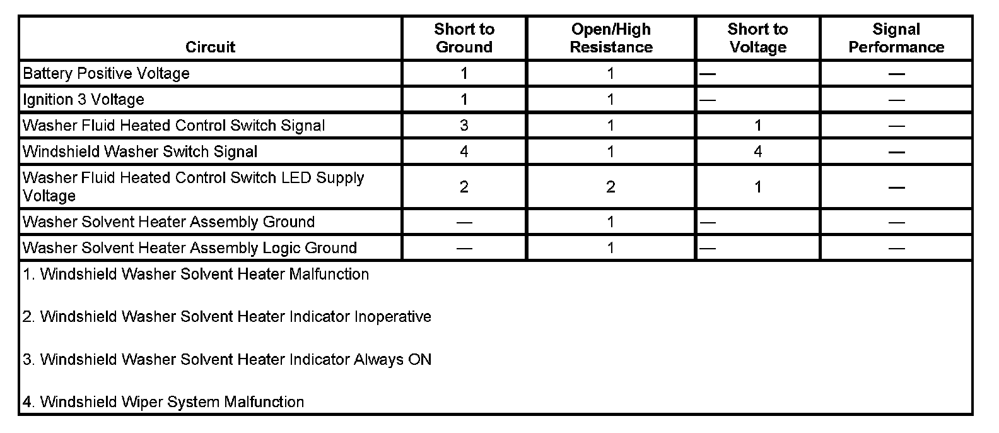

Windshield Washer Solvent Heater Malfunction
WINDSHIELD WASHER SOLVENT HEATER MALFUNCTION
DIAGNOSTIC FAULT INFORMATION

Perform the Diagnostic System Check - Vehicle prior to using this diagnostic procedure. Initial Inspection and Diagnostic Overview
CIRCUIT/SYSTEM DESCRIPTION
The windshield washer solvent heater operates with the standard windshield wiper washer system, and when a heated washer cycle is activated the solvent heater controls the windshield washers through the washer switch signal circuit to the body control module (BCM). The heater is supplied with high current power and ground circuits that are used to energize the heater coils. The low current logic voltage is supplied to the heater through the RUN relay in the underhood fuse block. The RUN relay is a PCB relay energized by the BCM only while the engine is running. The heated washer cycle operation is activated by a separate switch located on the instrument panel accessory switch assembly. When the heated washer fluid switch is pressed the heated washer switch signal circuit is momentarily grounded and the heated washer cycle is activated. During the heated wash cycle the 3 heater elements in the solvent heater are energized, and when the solvent temperature reaches approximately 70°C (160°F) the heater grounds the washer switch signal circuit until the heated solvent is dispensed. The heated washer cycle will run 4 heat and wash actions unless deactivated by the heated washer switch signal.
DIAGNOSTIC AIDS
Verify that the standard windshield wiper washer system operates normally before attempting to diagnose a heated washer system concern.
CIRCUIT/SYSTEM TESTING
Windshield Washer Solvent Heater Malfunction
1. Ignition OFF, disconnect the C1 harness connector at the windshield washer solvent heater assembly.
2. Ignition ON, verify that a test lamp illuminates between the battery positive voltage circuit terminal 1 and ground.
- If the test lamp does not illuminate, test the battery positive voltage circuit for a short to ground or an open/high resistance.
3. Verify that a test illuminates between the washer solvent heater assembly ground circuit terminal 2 and battery voltage.
- If the test lamp does not illuminate, test the ground circuit for an open/high resistance.
4. Ignition OFF, disconnect the C2 harness connector at the windshield washer solvent heater assembly.
5. Engine running, verify that a test lamp illuminates between the ignition 3 voltage circuit terminal 6 and ground.
- If the test lamp does not illuminate, test the ignition 3 voltage circuit for a short to ground or an open/high resistance.
6. Verify that a test illuminates between the washer solvent heater assembly ground circuit terminal 4 and battery voltage.
- If the test lamp does not illuminate, test the ground circuit for an open/high resistance.
7. Verify that a test lamp does not illuminate between the washer fluid heated control switch signal circuit terminal 1 and battery voltage.
- If the test lamp is illuminated, test the signal circuit for a short to ground. If the circuit tests normal, test or replace the heated washer fluid switch.
8. With a test lamp connected between the washer fluid heated control switch signal circuit terminal 1 and battery voltage, press the heated washer fluid switch and verify that the test lamp illuminates.
- If the test lamp does not illuminate, test the switch signal and ground circuits for a short to voltage or an open/high resistance. If the circuit test normal, test or replace the heated washer fluid switch.
9. If all circuits test normal, test or replace the windshield washer solvent heater assembly.
Windshield Heated Washer Fluid Indicator Inoperative
1. Ignition OFF, disconnect the C2 harness connector at the windshield washer solvent heater assembly.
2. Ignition ON, install a 3-amp fused jumper wire between the washer fluid heated control switch LED control circuit terminal 2 and ground. Verify the heated washer switch indicator is illuminated.
- If the indicator is not illuminated, test the control circuit for an open/high resistance. If the circuit tests normal, replace the accessory switch assembly.
3. If all circuits test normal, replace the windshield washer solvent heater assembly.
Windshield Heated Washer Fluid Indicator Always On
1. Ignition OFF, disconnect the C2 harness connector at the windshield washer solvent heater assembly.
2. Ignition ON, the heated washer switch indicator should not be illuminated.
- If illuminated, test the washer fluid heated control switch LED control circuit for a short to voltage. If the circuit tests normal, replace the accessory switch assembly.
3. If all circuits test normal, replace the windshield washer solvent heater assembly.
COMPONENT TESTING
Heated Washer Fluid Switch
1. Ignition OFF, disconnect the harness connector at the instrument panel accessory switch assembly.
2. Test for infinite resistance between the switch signal circuit terminal and the ground circuit terminal with the switch in the open position.
- If less than infinite, replace the accessory switch assembly.
3. Test for less than 3 ohms between the switch signal circuit terminal and the ground circuit terminal with the switch in the closed position.
- If greater than 3 ohms, replace the accessory switch assembly.
REPAIR INSTRUCTIONS
Perform the Diagnostic Repair Verification after completing the diagnostic procedure.
- Accessory Switch Replacement (Cadillac) Accessory Switch Replacement (Except Cadillac)
- Windshield Washer Solvent Heater Replacement. Verification Tests